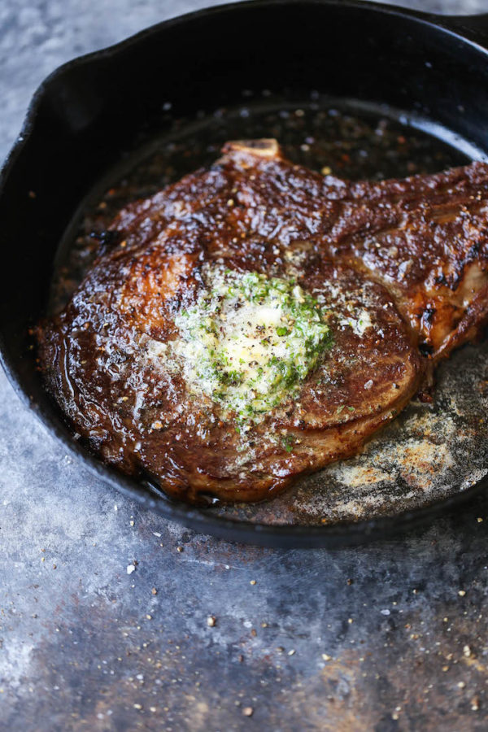

Garlic-Butter Steak

Description
This Steak with Garlic Butter is increadibly juicy, tender, and delicious
You can quickly cook this steak on your stovetop and it's great for an easy weeknight meal
Topped with garlic herb butter, this will quickly become your go-to steak recipe
Ingredients
- Ribeye or Stirloin
- Salt and Pepper
- Olive Oil
- Butter
- Garlic
- Fresh Herbs
Steps
- Mix 1 tablespoon butter with parsley, garlic and soy sauce
- Sprinkle steak with salt and pepper. In a large skillet, heat remaining butter over medium heat. Add steak; cook until meat reaches desired doneness (for medium-rare, a thermometer should read 135°; medium, 140°; medium-well, 145°), 4-7 minutes per side. Serve with garlic butter